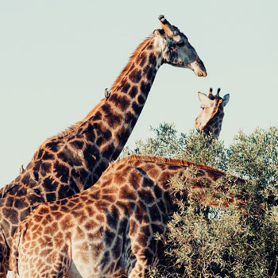
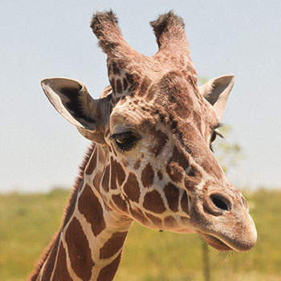
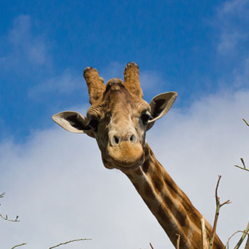
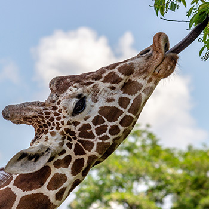

Facts

Giraffes are the tallest mammals on Earth. They only need to drink once every few days because most of their water comes from all the plants they eat. They only need 5-30 minutes of sleep in a 24 hour period and often take micro-naps that are a couple minutes long throughout the day!
giraffe party - gallery


